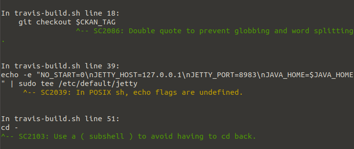

ShellCheck
I write bash scripts from time to time, but I'm certainly not a master of it and bash is a technology which has a variety of gotchas, surprising behaviours and foot-guns. This means the scripting process can be a bit of a minefield. Enter ShellCheck - a linter/static analysis tool for Bash. This is one of those tools I wish I had known about years ago as its great for flagging common mistakes and errors.
Using this locally in the terminal is great, but one of my favourite features is that if you paste your script into the editor on shellcheck.net any error codes raised links to a wiki article with a detailed explanation of why this error is being raised and what problems might be caused by this code. Example.
ShellCheck telling me how to fix a shonky bash script